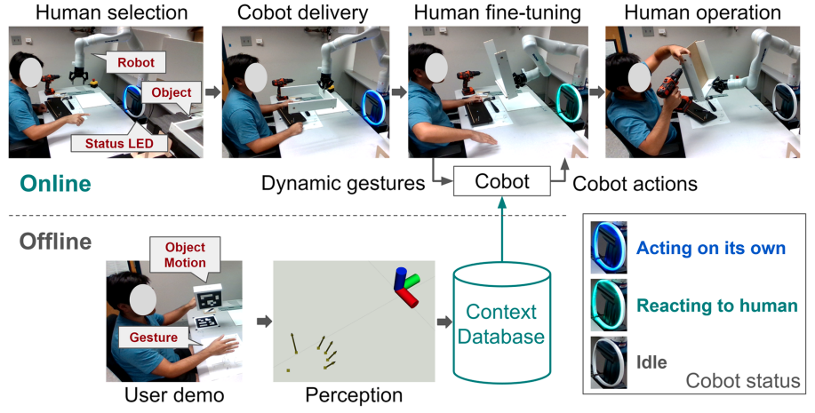
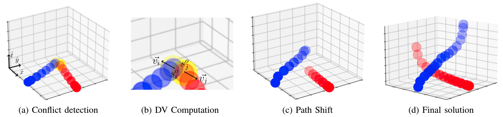
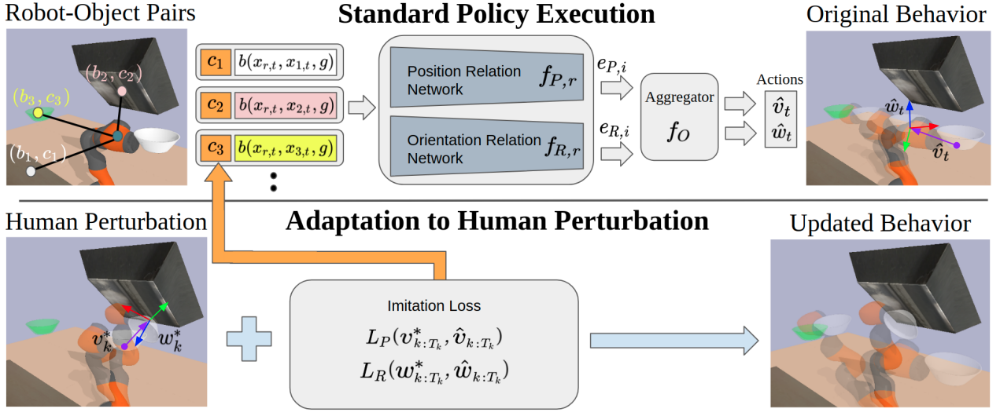
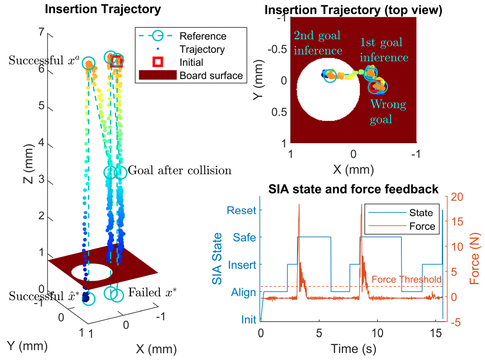
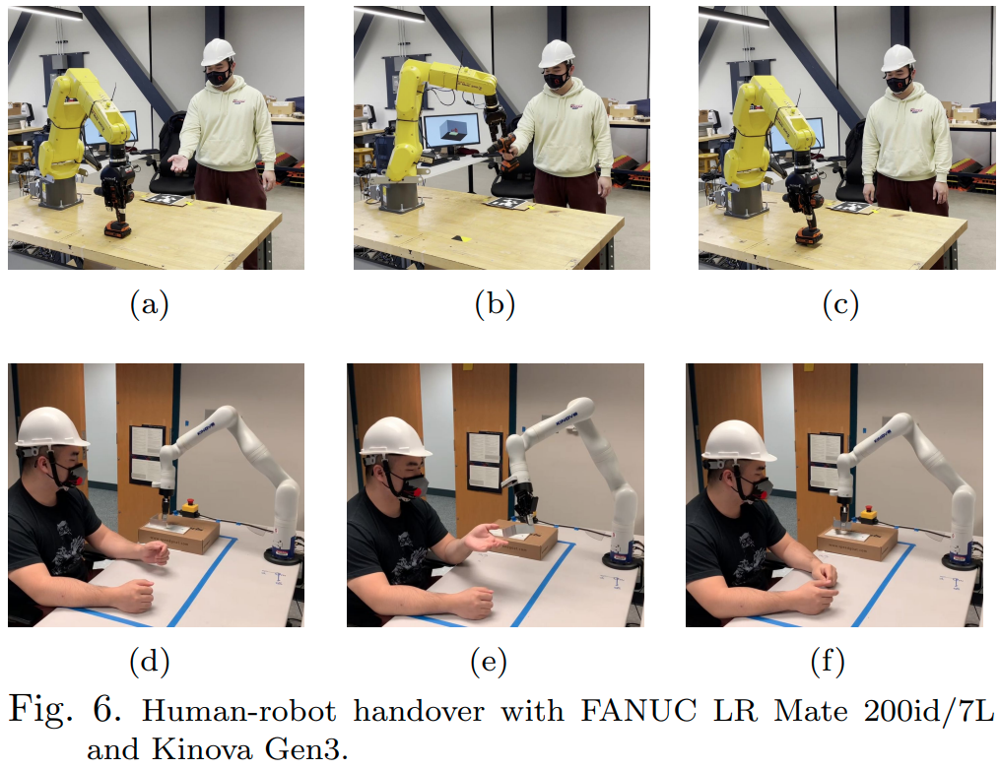
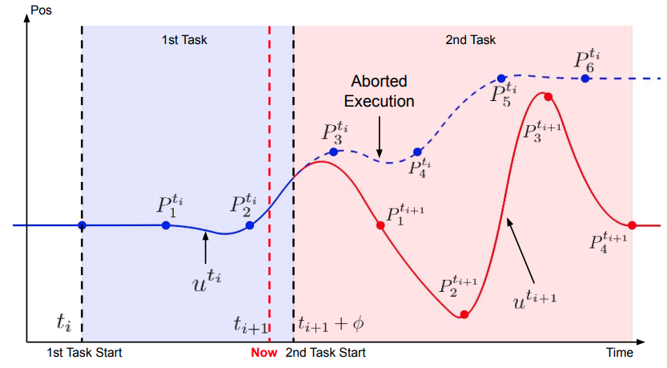
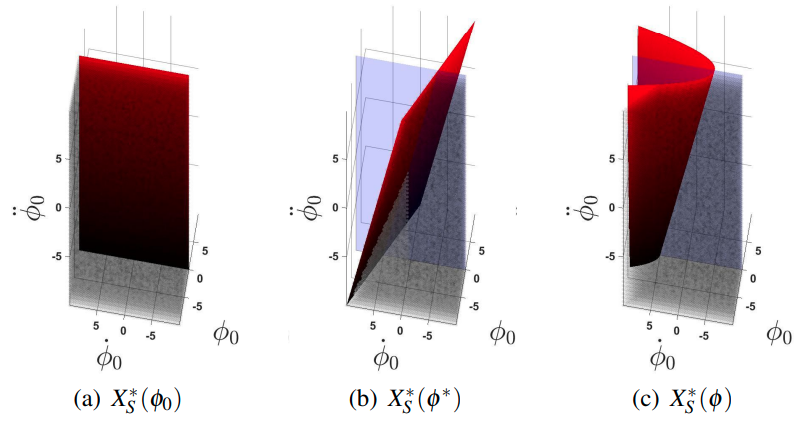
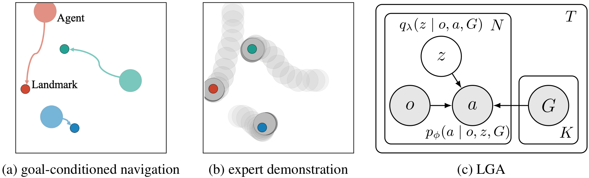
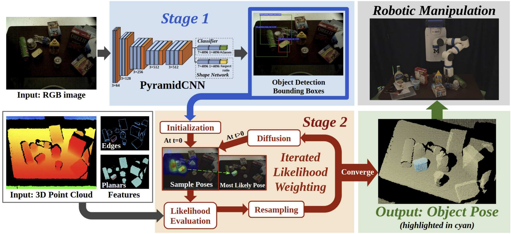
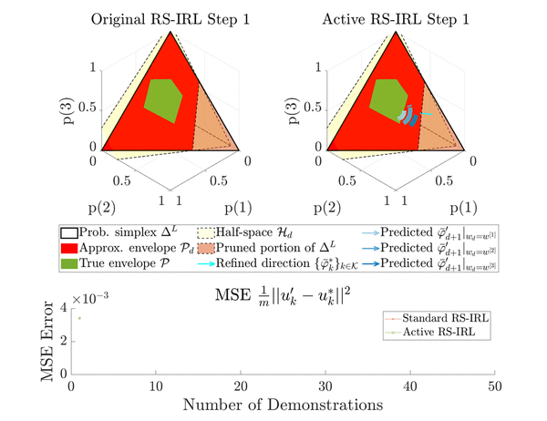

|
I am a Ph.D. student in the Robotics Institute at CMU, advised by Dr. Changliu Liu. I received my master's degree in Electrical & Computer Engineering and bachelor's degree in Computer Engineering from the University of Michigan, Ann Arbor. I also recieved a bachelor's degree in ECE from the Joint Institute at Shanghai Jiao Tong University. My current research focuses on adaptable approaches to provably safe control and human-robot interaction. I used to work on connected and automated vehicles with both hardware (e.g., Lincoln MKZ platform) and software (e.g., auto map generation for Carla). Email / CV / Google Scholar / Github |
{kind=link}
|
|
See the following list for my work, with the latest on top. |
|  |
Rui Chen, Alvin Shek, Changliu Liu IEEE Robotics and Automation Letters, 2023 [paper][arXiv] |
|  |
Anirudh Chari, Rui Chen, Changliu Liu IEEE Intelligent Vehicles Symposium, 2023 [arXiv] |
|  |
Alvin Shek, Rui Chen, Changliu Liu IEEE International Conference on Robotics and Automation (ICRA), 2023 [arXiv] |
|  |
Rui Chen, Chenxi Wang, Tianhao Wei, Changliu Liu IEEE/RSJ International Conference on Intelligent Robots and Systems (IROS), 2022 [paper] |
|  |
Ruixuan Liu, Rui Chen, Changliu Liu 4th IFAC Workshop on Cyber-Physical & Human-Systems, 2022 Best student paper award [arXiv] |
|  |
Ruixuan Liu, Rui Chen, Yifan Sun, Yu Zhao, Changliu Liu IEEE/ASME International Conference on Advanced Intelligent Mechatronics (AIM), 2022 [paper] |
|  |
Ruixuan Liu, Rui Chen, Changliu Liu International Symposium on Flexible Automation (ISFA), 2022 [paper] |
|  |
Rui Chen*, Peide Huang*, Laixi Shi* NeurIPS Workshop on Bayesian Deep Learning, 2021 [paper] |

|
Rui Chen, Mansur Arief, Weiyang Zhang, Ding Zhao IEEE Transactions on Intelligent Transportation Systems, 2021 [paper][arXiv] |
|  |
Xiaotong Chen, Rui Chen, Zhiqiang Sui, Zhefan Ye, Yanqi Liu, R. Iris Bahar, Odest Chadwicke Jenkins IEEE/RSJ International Conference on Intelligent Robots and Systems (IROS), 2019 [paper][arXiv][video] |
|  |
Rui Chen, Wenshuo Wang, Zirui Zhao, Ding Zhao arXiv, 2019 [arXiv] |